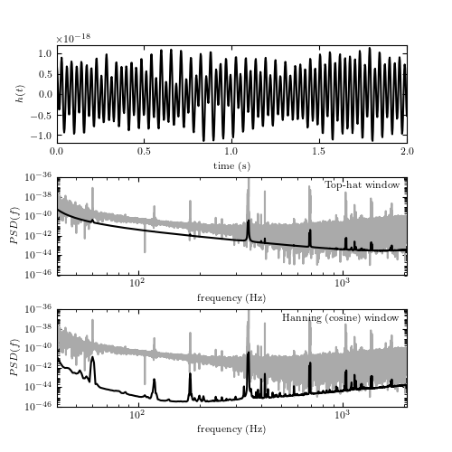

Plot the power spectrum of the LIGO big dog event¶
This compares the power spectrum computed using the raw FFT, and using Welch’s method (i.e. overlapping window functions that reduce noise).

# Author: Jake VanderPlas <vanderplas@astro.washington.edu>
# License: BSD
# The figure produced by this code is published in the textbook
# "Statistics, Data Mining, and Machine Learning in Astronomy" (2013)
# For more information, see http://astroML.github.com
import numpy as np
from matplotlib import pyplot as plt
from scipy import fftpack
from matplotlib import mlab
from astroML.datasets import fetch_LIGO_large
#------------------------------------------------------------
# Fetch the LIGO hanford data
data, dt = fetch_LIGO_large()
# subset of the data to plot
t0 = 646
T = 2
tplot = dt * np.arange(T * 4096)
dplot = data[4096 * t0: 4096 * (t0 + T)]
tplot = tplot[::10]
dplot = dplot[::10]
fmin = 40
fmax = 2060
#------------------------------------------------------------
# compute PSD using simple FFT
N = len(data)
df = 1. / (N * dt)
PSD = abs(dt * fftpack.fft(data)[:N / 2]) ** 2
f = df * np.arange(N / 2)
cutoff = ((f >= fmin) & (f <= fmax))
f = f[cutoff]
PSD = PSD[cutoff]
f = f[::100]
PSD = PSD[::100]
#------------------------------------------------------------
# compute PSD using Welch's method -- no window function
PSDW1, fW1 = mlab.psd(data, NFFT=4096, Fs=1. / dt,
window=mlab.window_none, noverlap=2048)
dfW1 = fW1[1] - fW1[0]
cutoff = (fW1 >= fmin) & (fW1 <= fmax)
fW1 = fW1[cutoff]
PSDW1 = PSDW1[cutoff]
#------------------------------------------------------------
# compute PSD using Welch's method -- hanning window function
PSDW2, fW2 = mlab.psd(data, NFFT=4096, Fs=1. / dt,
window=mlab.window_hanning, noverlap=2048)
dfW2 = fW2[1] - fW2[0]
cutoff = (fW2 >= fmin) & (fW2 <= fmax)
fW2 = fW2[cutoff]
PSDW2 = PSDW2[cutoff]
#------------------------------------------------------------
# Plot the data
fig = plt.figure(figsize=(8, 8))
fig.subplots_adjust(bottom=0.1, top=0.9, hspace=0.3)
# top panel: time series
ax = fig.add_subplot(311)
ax.plot(tplot, dplot, '-k')
ax.set_xlabel('time (s)')
ax.set_ylabel('$h(t)$')
ax.set_ylim(-1.2E-18, 1.2E-18)
# middle panel: non-windowed filter
ax = fig.add_subplot(312)
ax.loglog(f, PSD, '-', c='#AAAAAA')
ax.loglog(fW1, PSDW1, '-k')
ax.text(0.98, 0.95, "Top-hat window",
ha='right', va='top', transform=ax.transAxes)
ax.set_xlabel('frequency (Hz)')
ax.set_ylabel(r'$PSD(f)$')
ax.set_xlim(40, 2060)
ax.set_ylim(1E-46, 1E-36)
ax.yaxis.set_major_locator(plt.LogLocator(base=100))
# bottom panel: hanning window
ax = fig.add_subplot(313)
ax.loglog(f, PSD, '-', c='#AAAAAA')
ax.loglog(fW2, PSDW2, '-k')
ax.text(0.98, 0.95, "Hanning (cosine) window",
ha='right', va='top', transform=ax.transAxes)
ax.set_xlabel('frequency (Hz)')
ax.set_ylabel(r'$PSD(f)$')
ax.set_xlim(40, 2060)
ax.set_ylim(1E-46, 1E-36)
ax.yaxis.set_major_locator(plt.LogLocator(base=100))
plt.show()